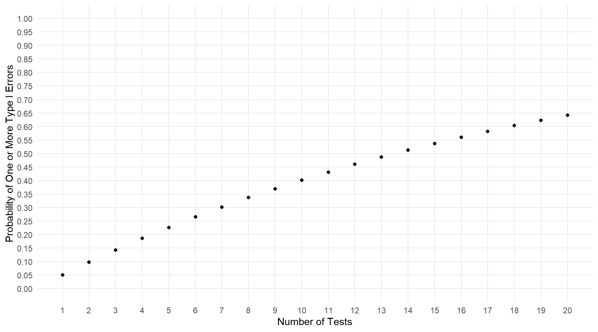

Wednesday, Nov 10
You can also download a PDF copy of this lecture.
(Mis)interpretations of P-Values
The \(p\)-value is a probability, but a probability of what?
The sampling distribution of a p-value often has a lot of variability. A replication of the same study can result in a very different p-value, and possibly a different conclusion.
Significance levels are quite arbitrary, and a very small change in a p-value can result in a very different decision. For example, suppose \(\alpha\) = 0.05. What would we do if the p-value was 0.049? What would we do if the p-value was 0.051?
Not Rejecting the Null Hypothesis Doesn’t Mean We Should Accept It
Not rejecting \(H_0\) is not necessarily good evidence that \(H_0\) is true.
Tests with low power have a high probability of not rejecting a false null hypothesis (i.e., a type II error).
The range of “acceptable” (i.e., not rejectable) null hypotheses may be relatively wide.
The Multiple Comparison Problem
Using multiple tests to “dredge” for significance can be dangerous. The probability of a single type I error (i.e., rejecting a true null hypothesis) is usually low, but the probability of doing this at least once among several tests can be much higher.
Suppose we conduct multiple independent tests where in each test the null hypothesis is true. If we use a significance level of \(\alpha\) = 0.05, what is the probability of making at least one type I error? 

Beware the Significance Filter
Results of studies are more likely to be disseminated when null hypotheses are rejected. This causes two problems.
The proportion of test conclusions in disseminated studies that are type I errors is larger than we would expect (\(\alpha\)).
Disseminated studies tend to overestimate effects because overestimated effects are more likely to result in statistical significance.
Statistical Versus Practical Significance
Statistical significance doesn’t imply that the result is important/useful.
In practice many null hypotheses are almost certainly false. There are often other more important questions.